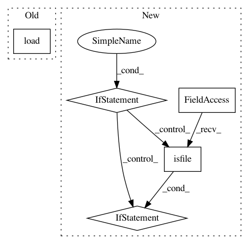

c97d6c3d1037af9dce18321243cd576a65c61c26,vocabularies.py,Code2VecVocabs,load_or_create,#Any#Any#,78
Before Change
if config.TRAIN_DATA_PATH and not config.MODEL_LOAD_PATH:
return cls.create(config)
else:
return cls.load(config.get_vocabularies_path_from_model_path(config.MODEL_LOAD_PATH))
@classmethod
def load(cls, vocabularies_load_path: str) -> "Code2VecVocabs":
with open(vocabularies_load_path, "rb") as file:
After Change
@classmethod
def load_or_create(cls, config: Config) -> "Code2VecVocabs":
vocabularies_load_path = None
if not config.TRAIN_DATA_PATH_PREFIX or config.MODEL_LOAD_PATH:
vocabularies_load_path = config.get_vocabularies_path_from_model_path(config.MODEL_LOAD_PATH)
if not os.path.isfile(vocabularies_load_path):
vocabularies_load_path = None
if vocabularies_load_path is None:
return cls.create(config)
else:
return cls.load(vocabularies_load_path)
In pattern: SUPERPATTERN
Frequency: 3
Non-data size: 5
Instances
Project Name: tech-srl/code2vec
Commit Name: c97d6c3d1037af9dce18321243cd576a65c61c26
Time: 2019-04-02
Author: eladnah@gmail.com
File Name: vocabularies.py
Class Name: Code2VecVocabs
Method Name: load_or_create
Project Name: lingpy/lingpy
Commit Name: 58ab225e313cde281696aca8bdfaff26695d879a
Time: 2013-07-17
Author: mattis.list@posteo.de
File Name: lingpy/data/model.py
Class Name: Model
Method Name: __init__
Project Name: dPys/PyNets
Commit Name: 1707d2835528e8c1c7f927fdcd9e577871413371
Time: 2019-11-19
Author: dpisner@utexas.edu
File Name: pynets/fmri/estimation.py
Class Name:
Method Name: extract_ts_coords